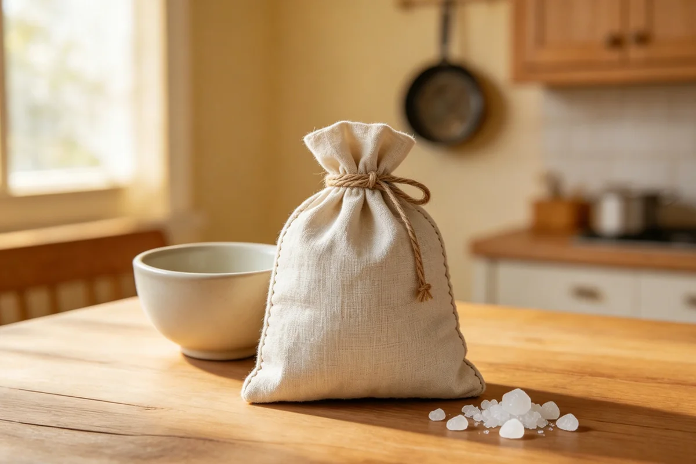

The Coarse Salt Warming Bag
My grandmother made her salt bag from a worn cotton pillowcase. On winter evenings she warmed the coarse crystals in the kitchen, tested the bundle against her wrist, and carried it to the chair beside the television.

A square cut from a pillowcase
The cloth had once been part of a faded floral pillowcase. My grandmother cut away the thinnest section, folded the stronger cotton into a square, and closed the edge with the same short stitches she used when a pillow seam opened. The bag was never decorative. Its corners were blunt, and one side carried a patch from an earlier repair.
She kept coarse salt in a jar near the stove. When the bag came out, the dry pan came out with it. I remember the faint crackle from the kitchen and the sound of the crystals shifting as she filled the cloth.
The test before she passed it over
My grandmother pressed the bundle in several places, then held it against the inside of her wrist. If she pulled her hand away, she wrapped the bag in another towel. Only after that did she set it across her knee or hand it to my grandfather in the next chair.
The same checking happened with a warm towel and with the water prepared for a ginger foot basin. When she used a moxa stick, the ash bowl was already on the table before the ember was lit. The work began with arranging the room, not with the object itself.
After the room went quiet
She watched television with the salt bag resting under one hand. Later she emptied the crystals back into their jar, shook the cloth over the sink, and folded it beside the dry towels.
The repaired pillowcase square stayed in that cupboard through several winters. Its floral print faded further, but the stitches along the edge held.